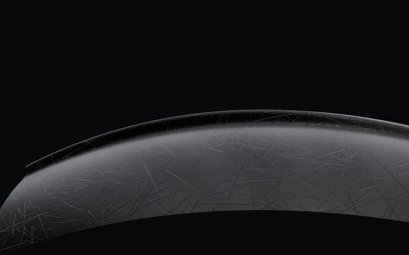
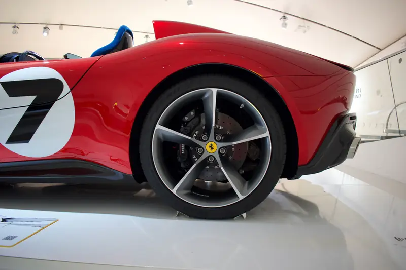
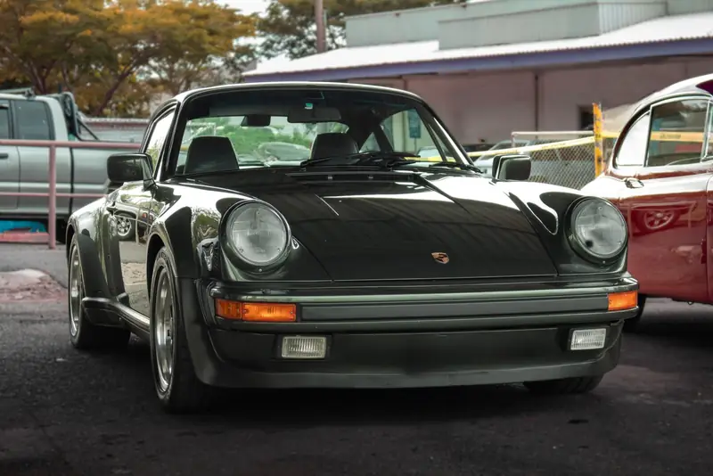
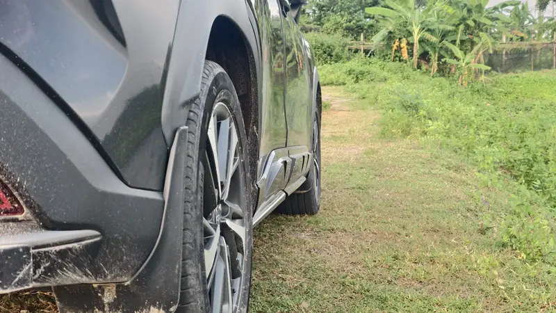
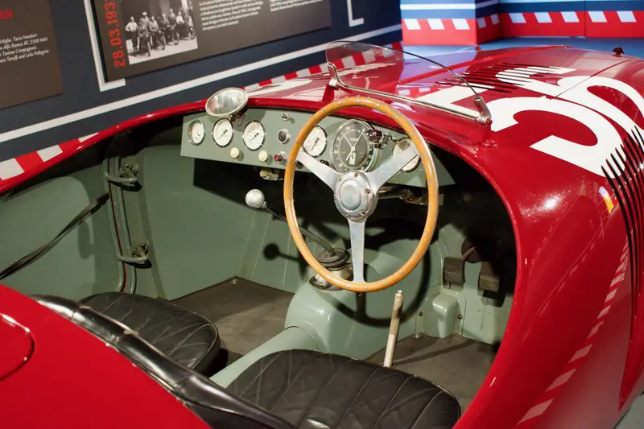

Lavado detallado
Prelavado con espuma, dos cubetas, descontaminado férrico y secado con aire.
desde $1,200 MXN*

Detailing de autor · Monterrey, N.L.
Corrección de pintura en 2 pasos y cerámico 9H. Baja para ver lo que hacemos con un panel real.
01 / Diagnóstico
Swirls de lavado con rodillo, hologramas de pulido mal hecho y rayas finas. El brillo se queda en 38 GU.*
02 / Corrección
Medimos el espesor y corregimos por secciones. A la izquierda, después; a la derecha, antes.
03 / Acabado
El negro vuelve a ser negro: las barras de luz se reflejan sin halos.
04 / Cerámico 9H
Efecto perla durante hasta 3 años (ejemplo). Lavar es enjuagar.
Agendar diagnóstico gratisPrelavado con espuma, dos cubetas, descontaminado férrico y secado con aire.
desde $1,200 MXN*
1 o 2 pasos con medición de micras. Elimina hasta el 90% de swirls (ejemplo).
desde $6,500 MXN*
Protección de 1 a 3 años, hidrofóbica, con certificado y revisión anual.
desde $9,800 MXN*
Aspirado profundo, vapor, hidratación de piel y ozono contra olores.
desde $2,400 MXN*

AntesDespuésSimulación con filtros para la demo: el “antes” se genera con CSS sobre la misma foto.



Precio estimado al momento. Confirmamos tras ver el auto (diagnóstico gratis, ejemplo).
Total estimado
$1,200MXN*
Agendar por WhatsAppRecogemos tu auto en San Pedro y Cumbres sin costo (ejemplo).
“Mi Mustang negro parecía gris. Ahora me da miedo lavarlo yo.”
Rodrigo · San Pedro
“Me mandaron fotos con el medidor de micras en cada paso. Cero sorpresas.”
Ana Sofía · Cumbres
“El cerámico vale cada peso: con la lluvia el agua se va sola.”
Héctor · Valle Oriente